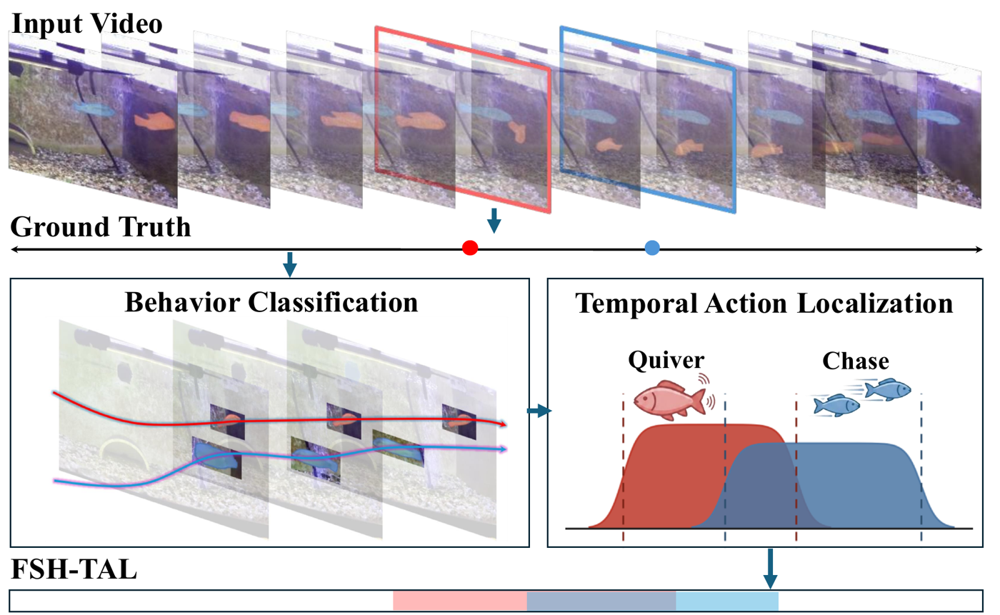
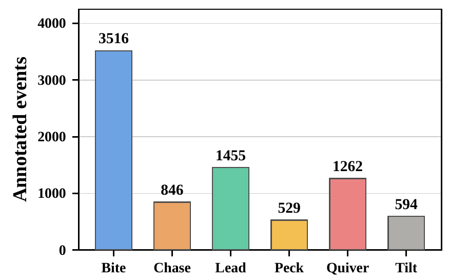
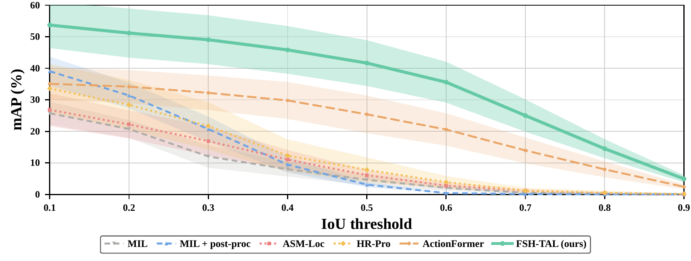

TL;DRPoint-supervised temporal action localization for cichlid courtship behavior, trained only on the timestamps biologists already collect.

Experts currently annotate cichlid courtship behavior as single timestamped points, with no record of how long each behavior lasted. FSH-TAL turns those sparse points into classified, temporally localized segments over hour-long aquarium recordings, reaching 42.8% mAP (IoU 0.1–0.7).

17 hour-long recordings of paired Astatotilapia burtoni (25 FPS) give 8,202 point-annotated events across six behaviors: Bite, Lead, Peck, Quiver, Chase, and Tilt, each annotated by 4 observers for inter-rater reliability. All results use 5-fold cross-validation.
| Method | #Params | mAP@IoU (%) | ||||
|---|---|---|---|---|---|---|
| 0.1 | 0.3 | 0.5 | 0.7 | Avg | ||
| MIL classifier | 16.0M | 25.7 | 12.0 | 4.6 | 0.5 | 10.5 |
| MIL + post-proc | 16.0M | 39.1 | 20.7 | 3.1 | 0.1 | 14.9 |
| ASM-Loc | 1.8M† | 26.8 | 16.9 | 6.1 | 1.2 | 12.4 |
| HR-Pro | 23.2M | 33.6 | 21.7 | 7.8 | 1.2 | 15.6 |
| ActionFormer | 27.3M† | 35.1 | 32.2 | 25.4 | 14.0 | 27.3 |
| FSH-TAL (Ours) | 15.8M† | 53.3 | 48.7 | 41.3 | 24.7 | 42.8 |

FSH-TAL reaches 42.8% mAP (IoU 0.1–0.7), ahead of weakly-supervised (ASM-Loc, HR-Pro) and fully-supervised (ActionFormer) baselines at every IoU threshold, despite training on point labels alone. † Not including parameters used to generate embeddings.
@inproceedings{srinivasan2026automated,
title = {Automated Temporal Localization of Behavior in Cichlid Fish with Few-Shot Trajectory Tokens},
author = {Bhargav Srinivasan and William Lamousin and Jason Liu and Charles Phan and Ofure Osunbor and Cade McGeehan and Shubh Sharma and Tahir Haroon and Vijay Jayasuriya and Coltan G. Parker and Scott Juntti and Pulkit Kumar and Abhinav Shrivastava},
booktitle = {Third Workshop on Computer Vision for Ecology (CV4Ecology), ECCV},
year = {2026},
url = {https://openreview.net/forum?id=T4haB8tCOJ}
}